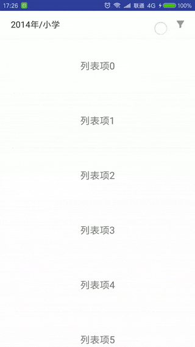
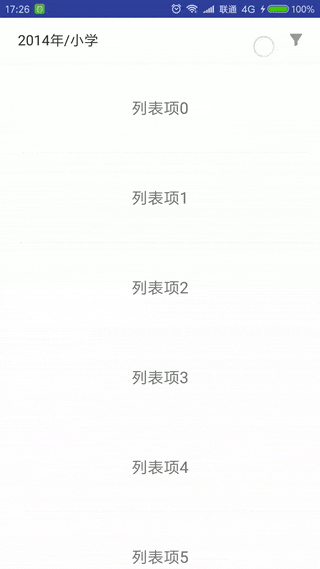

过滤器控件-FilterView
Contents
这是新项目中用到的一个过滤器控件，会根据输入数据动态生成过滤器视图。每组过滤条件为单选，当选择的过滤条件有变化时会通过回调方法通知用户，并更新标题栏上的条件显示。
效果

样式设置
控件仅提供了几个简单的样式设置项，如文字颜色、背景颜色、按钮背景选择器等，通过相应的set方法来进行设置（如果有更复杂的需求建议直接修改控件源码）：
|
|
这是新项目中用到的一个过滤器控件，会根据输入数据动态生成过滤器视图。每组过滤条件为单选，当选择的过滤条件有变化时会通过回调方法通知用户，并更新标题栏上的条件显示。

控件仅提供了几个简单的样式设置项，如文字颜色、背景颜色、按钮背景选择器等，通过相应的set方法来进行设置（如果有更复杂的需求建议直接修改控件源码）：
|
|